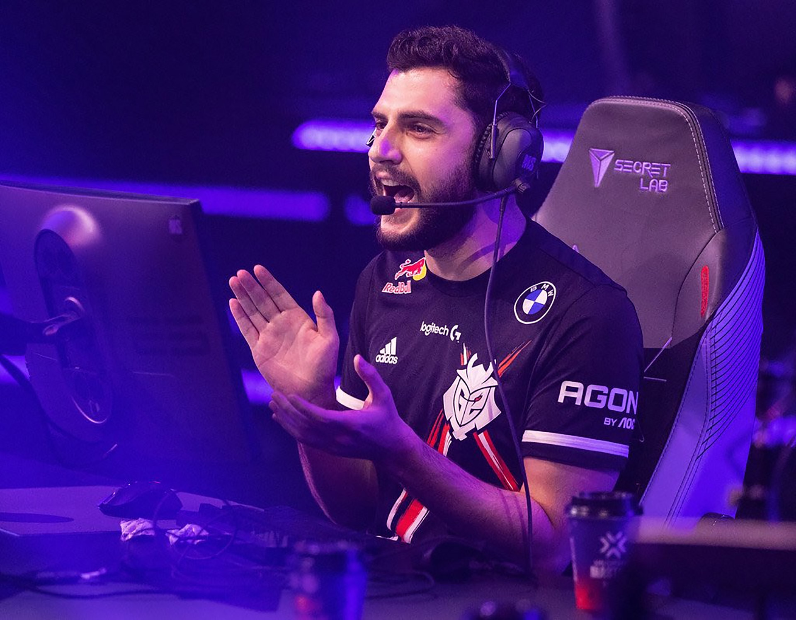

Lucas Rojo
Lucas "Rojo Pico" Rojo es un entrenador destacado en la escena
competitiva de Valorant y es reconocido por ser tres veces campeón
de España en esports. Este logro resalta su habilidad estratégica y
su capacidad para llevar a sus equipos al más alto nivel
competitivo. A lo largo de su carrera, ha demostrado una gran
capacidad para implementar tácticas innovadoras, adaptándose al
cambio constante del meta en Valorant y maximizando el potencial de
sus jugadores. Su éxito al ganar nacionalmente 3 veces consecutivas
ha consolidado su reputación como uno de los entrenadores más
destacados de la escena de Valorant en España.
Mixwell
Mixwell logró este increíble hito con OpTic Gaming al conquistar el
Major de CS:GO en 2017, lo que lo catapultó a la fama como uno de
los mejores jugadores del mundo en ese momento. Este logro fue clave
en su carrera, demostrando su habilidad y liderazgo en grandes
competiciones internacionales. Después de su paso por OpTic Gaming,
también destacó en G2 Esports y más recientemente en Valorant, donde
alcanzó el top 4 en Masters Berlín. Actualmente, Mixwell es dueño de
su propia organización de esports, Otakar, y sigue siendo un
referente en la escena competitiva.

Quentin
Quentin es uno de los comentaristas de esports más conocidos en
España, destacándose especialmente en League of Legends. Con una voz
carismática y un profundo conocimiento de los juegos, ha logrado
ganarse el respeto de la comunidad y de los jugadores. A lo largo de
su carrera, ha formado parte de importantes transmisiones de
competiciones nacionales e internacionales, brindando análisis y
emoción a los espectadores. Su capacidad para transmitir la
intensidad de los enfrentamientos lo ha convertido en una figura
clave en la escena de los esports en España.
xPeke
xPeke (Carlos "xPeke" Rodríguez) es uno de los jugadores más
icónicos de la historia de los esports en España, especialmente
reconocido por su éxito en League of Legends. Fue el fundador y
capitán del equipo Fnatic, con el que alcanzó grandes logros,
incluyendo la victoria en el Campeonato Mundial de League of Legends
en 2011. Conocido por su habilidad estratégica y su increíble
talento en el rol de medio, xPeke dejó una huella imborrable en la
escena competitiva. Tras su retiro como jugador profesional, sigue
siendo una figura influyente en la comunidad de los videojuegos y
los esports..
Pepinero
Pepinero es un jugador español de League of Legends que se destacó
en el rol de medio. Su mayor logro fue lograr la clasificación a la
LCS con Giants Gaming, convirtiéndose en parte del primer equipo
español en alcanzar la liga profesional más importante de Europa.
Este hito marcó un antes y un después en la escena competitiva de
España, y Pepinero fue clave en ese éxito. A lo largo de su carrera,
ha demostrado gran habilidad y consistencia, consolidándose como uno
de los jugadores más respetados en la comunidad española de esports.